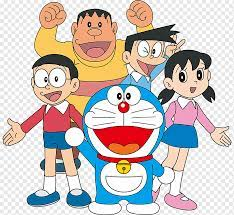
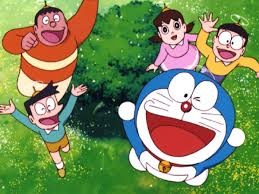

.jpg)
Nobitha And Doreamon
Doraemon is a cat-type robot in the 22nd century. He is 129.3 cm tall, the girth of the chest are 129.3 cm and his weight is 129.3 kg. He has a pocket of the fourth dimension at his stomach. His favorite food is dorayaki which he eats everyday. He has a younger sister whose name is Dorami. He came to the house of Nobi Nobita from the 22nd century taking a time machine, and he lives with the Nobi. Nobita, the only child of the family, is a friend of Doraemon. He is bullied by his friend Jaian and Suneo almost everyday. In such a time, Doraemon takes out tools made in the 22nd century from his pocket of the fourth dimension for Nobita to punish them. So, Nobita always trusts Doraemon. Not only he has tools to punish bullies, but he also has various tools from his pocket. For example, take-copter is a tool to fly in the sky. It has a propeller and put it on head. Docodemo-door is a door which enables people to go anyplace. Small light is a light to make a person or objects small. I said Doraemon is a cat-type robot, but he does not have ears, which his ears were eaten by rats. Therefore, he dislikes rats and this is his weak point. If you pull his small tail, he will stop moving. This is also his weak point.
 .jpg)
.jpg)
Doraemon isn't perfect. When viewed objectively, it is simply not a masterpiece. BUT, how boring would the world be if we viewed everything objectively, lacking the zeal and passion that is an integral component of our very being. In a way, Doraemon is like my mother- I know that she isn't perfect, but I love her to the moon and there is nobody who can replace her. And just like that, not a thing in existence can replace Doraemon for me. It defined a major part of my childhood, shaping my memories along the way. I still giggle reminiscing the awe with which I used to adore my television time with Doraemon (And those gadgets, oh those beautiful little gadgets). The curiosity, the giggles, and the emotions that this show carries is beyond anything that I might ever experience in my life. I'm running short on time, but I can praise this show all day long. I'll end by giving it the highest compliment that I can conjure- Doraemon IS my childhood. And this review is a love letter to my childhood.
There are millions of Doraemon fans around the world who, to this day, continue watching the series. However, very few people know the truth behind the series. There were recent viral videos that spread like wildfire on the internet that highlighted the true story behind Nobita. Nobita Hiroshi, a 9-year-old boy from Japan, seemed healthy and happy like any other boy his age, except Nobita was hiding a secret from the world. He was suffering from schizophrenia, a disease which makes one see things that do not exist. So real they seem to the victim that they absolutely refuse to believe that it isn't true. Thus, the seemingly lonely and misunderstood Nobita created, in his mind, the adorable Doraemon that would give him everything he ever wanted and more. Being alienated in school, being misunderstood everywhere else and thanks to his schizophrenic mind, Doraemon became his best friend, the only friend who would understand him.And thus Doraemon came to be, a toy comes to life who would never bother or irritate Nobita. Such was Nobita's dependence on Doraemon, whom he imagined would give him all sorts of weird gadgets to do stuff with.
.jpg)
when Nobita was told by the doctors that Doraemon was not real, he simply could not take it. When he was 16 years old, the Hiroshi family finally took him to the doctors who dismissed the existence of Doraemon, prompting Nobita to take the extreme step. He took his own life with his father's gun, refusing to exist in a world that disregarded his own.